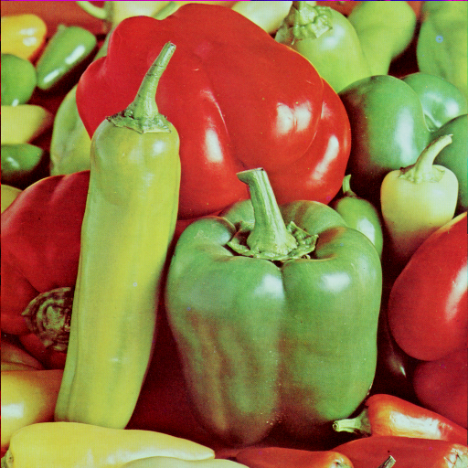
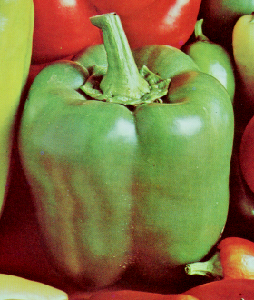
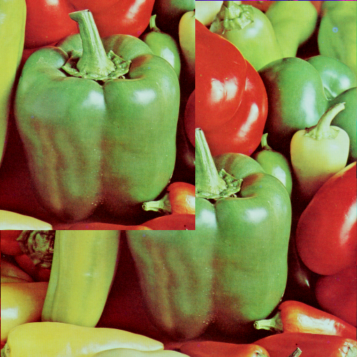
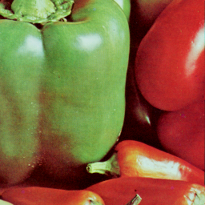
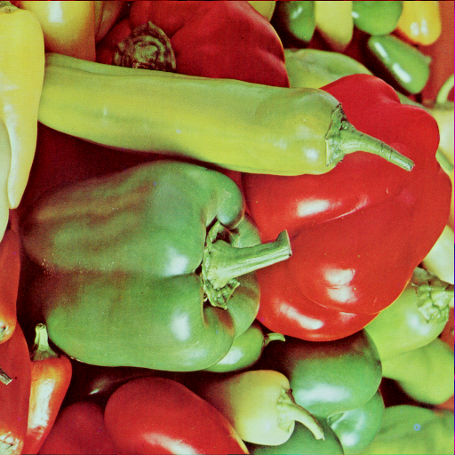
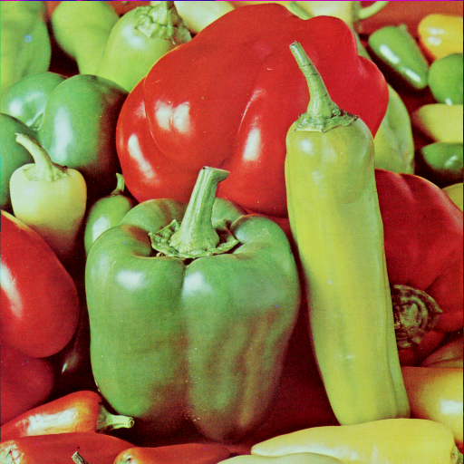
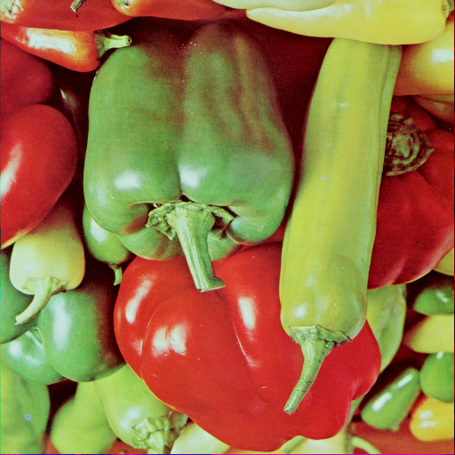
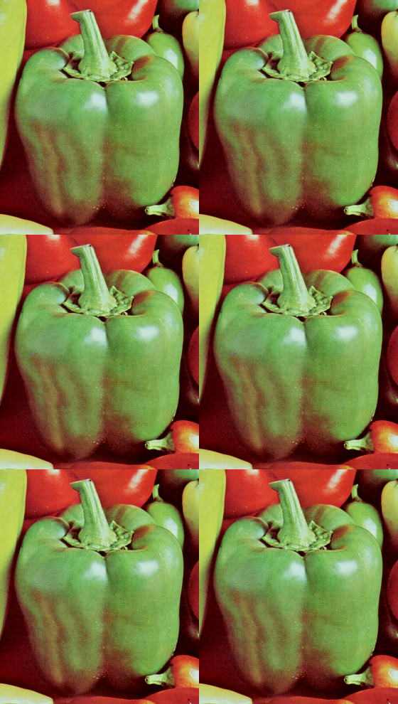
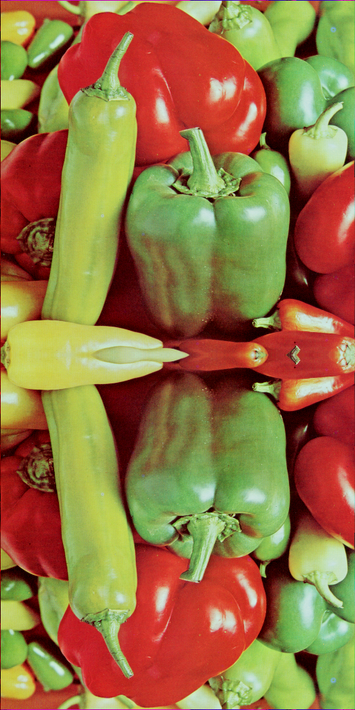
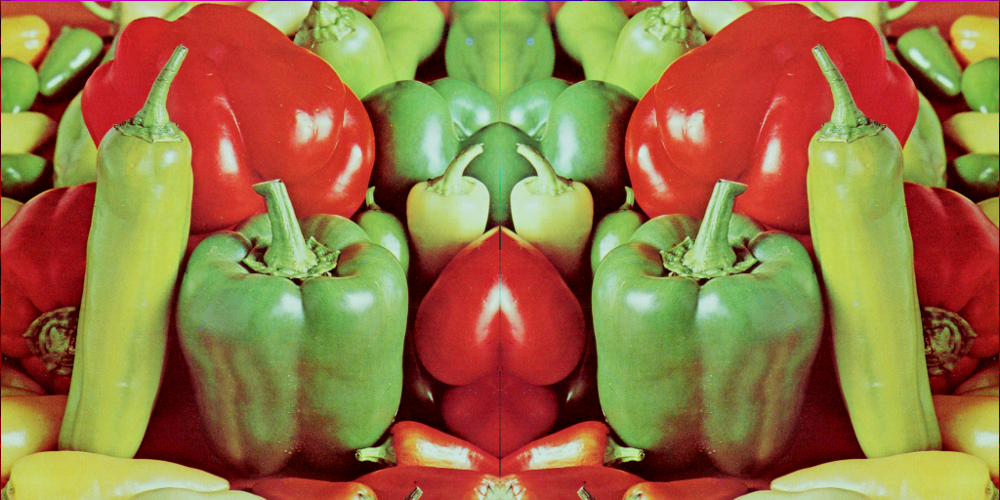

NumPyを使った画像データ処理¶
画像とNumPy配列の間の変換¶
画像をNumPy配列に変換¶
※ここで読み込んでいる画像はUSCデータベース https://sipi.usc.edu/database/database.php からダウンロードできます。
[1]:
from PIL import Image
import numpy as np
im = Image.open("data/4.2.07.tiff")
print(im.format)
print(im.size)
print(im.mode)
TIFF
(512, 512)
RGB
[2]:
im_array = np.array(im)
print(type(im_array))
<class 'numpy.ndarray'>
[3]:
print(im_array.shape)
(512, 512, 3)
[4]:
print(im_array[0, 0, :])
[101 0 0]
[5]:
print(im_array[256, :, :])
[[131 0 0]
[188 60 51]
[189 76 56]
...
[204 48 46]
[192 38 36]
[205 46 44]]
[6]:
print(im_array[256, 128, :])
[176 192 80]
NumPy配列を画像に変換¶
[7]:
Image.fromarray(im_array)
[7]:

拡大／縮小¶
[8]:
import cv2 as cv
# 幅128ピクセル、高さ256ピクセルに変換
im_resized1 = cv.resize(im_array, (128, 256))
Image.fromarray(im_resized1)
---------------------------------------------------------------------------
ModuleNotFoundError Traceback (most recent call last)
Cell In[8], line 1
----> 1 import cv2 as cv
3 # 幅128ピクセル、高さ256ピクセルに変換
4 im_resized1 = cv.resize(im_array, (128, 256))
ModuleNotFoundError: No module named 'cv2'
[9]:
# 横方向に0.25倍、縦方向に0.5倍
im_resized2 = cv.resize(im_array, dsize=None, fx=0.25, fy=0.5)
Image.fromarray(im_resized2)
---------------------------------------------------------------------------
NameError Traceback (most recent call last)
Cell In[9], line 2
1 # 横方向に0.25倍、縦方向に0.5倍
----> 2 im_resized2 = cv.resize(im_array, dsize=None, fx=0.25, fy=0.5)
3 Image.fromarray(im_resized2)
NameError: name 'cv' is not defined
[10]:
im_resized3 = cv.resize(
im_array,
(128, 256),
interpolation=cv.INTER_AREA,
)
Image.fromarray(im_resized3)
---------------------------------------------------------------------------
NameError Traceback (most recent call last)
Cell In[10], line 1
----> 1 im_resized3 = cv.resize(
2 im_array,
3 (128, 256),
4 interpolation=cv.INTER_AREA,
5 )
6 Image.fromarray(im_resized3)
NameError: name 'cv' is not defined
[11]:
# 縦に3倍、横に2倍
im_repeated = im_array.repeat(3, axis=0).repeat(2, axis=1)
Image.fromarray(im_repeated)
[11]:

切り取り／貼り付け¶
[12]:
# 中央右のピーマンを縦330、横280の長方形に切り取る
im_cropped = im_array[170:500, 160:440, :]
Image.fromarray(im_cropped)
[12]:

[13]:
# 左上隅に貼り付け
im_pasted = im_array.copy()
im_pasted[0:330, 0:280, :] = im_cropped
Image.fromarray(im_pasted)
[13]:

分割（n等分）¶
[14]:
# 左右に2等分
im_left, im_right = np.split(im_array, 2, axis=1)
Image.fromarray(im_left) # 左
[14]:
[15]:
# 上下左右に2等分（4分割）
im_split_list = []
for part in np.split(im_array, 2, axis=0):
im_split_list.extend(np.split(part, 2, axis=1))
Image.fromarray(im_split_list[3]) # 右下
[15]:

90度単位での回転¶
[16]:
# 反時計回りに270°回転
im_rotated270 = np.rot90(im_array, k=3) # k=-1でも同じ
Image.fromarray(im_rotated270)
[16]:

反転¶
[17]:
# 上下反転
im_flipped_vertical = np.flip(im_array, axis=0)
Image.fromarray(im_flipped_vertical)
[17]:

[18]:
# 左右反転
im_flipped_horizontal = np.flip(im_array, axis=1)
Image.fromarray(im_flipped_horizontal)
[18]:

[19]:
# 上下左右反転（180°回転と同じ）
im_flipped_both = np.flip(im_array, axis=(0, 1))
Image.fromarray(im_flipped_both)
[19]:

[20]:
# 反転方向の指定なし
im_flipped_wrong = np.flip(im_array)
Image.fromarray(im_flipped_wrong)
[20]:

複製／貼り合わせ¶
[21]:
# 縦方向に3回、横方向に2回複製。
im_tiled = np.tile(im_cropped, reps=(3, 2, 1))
Image.fromarray(im_tiled)
[21]:

[22]:
# 縦方向に並べる
im_concatenated_vertical = np.concatenate(
[im_array, im_flipped_vertical],
axis=0,
)
Image.fromarray(im_concatenated_vertical)
[22]:

[23]:
# 横方向に並べる
im_concatenated_horizontal = np.concatenate(
[im_array, im_flipped_horizontal],
axis=1,
)
Image.fromarray(im_concatenated_horizontal)
[23]:

次元の操作¶
ravel()¶
[24]:
im_2d = im_array[:, :, 0] # Rチャネルを抽出
print(f"{im_2d.shape=}")
print(f"{np.ravel(im_2d).shape=}") # 要素の数は512x512
print(np.array_equal(np.ravel(im_2d), im_2d.flatten())) # 同じ結果であることを確認
im_2d.shape=(512, 512)
np.ravel(im_2d).shape=(262144,)
True
[25]:
im_order = im_2d[0:2, 0:2] # 配列の左隅の2行2列
print(im_order)
print(f'行を優先： {np.ravel(im_order, order="C")}') # C言語形式、デフォルト
print(f'列を優先： {np.ravel(im_order, order="F")}') # FORTRAN言語形式
[[101 140]
[123 191]]
行を優先： [101 140 123 191]
列を優先： [101 123 140 191]
expand_dims()¶
[26]:
im_3d_last = np.expand_dims(im_2d, axis=-1) # 最後に追加
im_3d_first = np.expand_dims(im_2d, axis=0) # 先頭に追加
im_3d_1 = np.expand_dims(im_2d, axis=1) # 1番目に追加
print(f"{im_3d_last.shape=}")
print(f"{im_3d_first.shape=}")
print(f"{im_3d_1.shape=}")
im_3d_last.shape=(512, 512, 1)
im_3d_first.shape=(1, 512, 512)
im_3d_1.shape=(512, 1, 512)
squeeze()¶
[27]:
im_2d_squeezed_last = np.squeeze(im_3d_last, axis=-1)
im_2d_squeezed_1 = np.squeeze(im_3d_1, axis=1)
print(f"{im_2d_squeezed_last.shape=}")
print(f"{im_2d_squeezed_1.shape=}")
# 同じ結果であることを確認
print(
np.array_equal(
im_2d_squeezed_last,
im_2d_squeezed_1,
)
)
im_2d_squeezed_last.shape=(512, 512)
im_2d_squeezed_1.shape=(512, 512)
True
HWCとCHWとの変換¶
HWCからCHWへ¶
[28]:
im_hwc = im_cropped.copy() # 切り取ったピーマン
print(im_hwc.shape)
(330, 280, 3)
[29]:
print(np.swapaxes(im_hwc, 1, 2).swapaxes(0, 1).shape)
(3, 330, 280)
[30]:
print(np.moveaxis(im_hwc, 2, 0).shape)
(3, 330, 280)
[31]:
print(np.transpose(im_hwc, (2, 0, 1)).shape)
(3, 330, 280)
CHWからHWCへ¶
[32]:
# 準備（CHWに変換しておく。）
im_chw = np.transpose(im_hwc, (2, 0, 1))
print(im_chw.shape)
(3, 330, 280)
[33]:
print(np.swapaxes(im_chw, 1, 2).swapaxes(0, 2).shape)
(330, 280, 3)
[34]:
print(np.moveaxis(im_chw, 0, 2).shape)
(330, 280, 3)
[35]:
print(np.transpose(im_chw, (1, 2, 0)).shape)
(330, 280, 3)
色（チャネル）の積み重ね／変換¶
[36]:
# チャネルごとに分割した配列から元の配列を再構成
im_stacked = np.stack(
[
im_array[:, :, 0],
im_array[:, :, 1],
im_array[:, :, 2],
],
axis=2,
)
print(np.array_equal(im_stacked, im_array))
True
[37]:
# NumPyのみ
im_rgb = im_array.copy()
im_bgr_np = im_rgb[:, :, [2, 1, 0]] # 色（チャネル）の軸を並べ替える
[38]:
# OpenCVのcvtColor関数
im_bgr_cv = cv.cvtColor(im_rgb, code=cv.COLOR_RGB2BGR)
print(np.array_equal(im_bgr_np, im_bgr_cv)) # NumPyと同じ結果であることを確認
---------------------------------------------------------------------------
NameError Traceback (most recent call last)
Cell In[38], line 2
1 # OpenCVのcvtColor関数
----> 2 im_bgr_cv = cv.cvtColor(im_rgb, code=cv.COLOR_RGB2BGR)
3 print(np.array_equal(im_bgr_np, im_bgr_cv)) # NumPyと同じ結果であることを確認
NameError: name 'cv' is not defined
[39]:
# NumPyのみ
im_rgb_np = im_bgr_np[:, :, [2, 1, 0]] # 色（チャネル）の軸を並べ替える
print(np.array_equal(im_rgb_np, im_rgb)) # 元に戻ったことを確認
True
[40]:
# OpenCVのcvtColor関数
im_rgb_cv = cv.cvtColor(im_bgr_cv, code=cv.COLOR_BGR2RGB)
print(np.array_equal(im_rgb_cv, im_rgb)) # 元に戻ったことを確認
---------------------------------------------------------------------------
NameError Traceback (most recent call last)
Cell In[40], line 2
1 # OpenCVのcvtColor関数
----> 2 im_rgb_cv = cv.cvtColor(im_bgr_cv, code=cv.COLOR_BGR2RGB)
3 print(np.array_equal(im_rgb_cv, im_rgb)) # 元に戻ったことを確認
NameError: name 'cv' is not defined